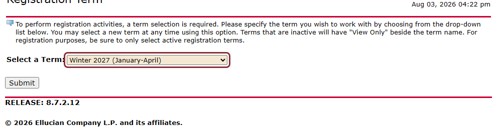
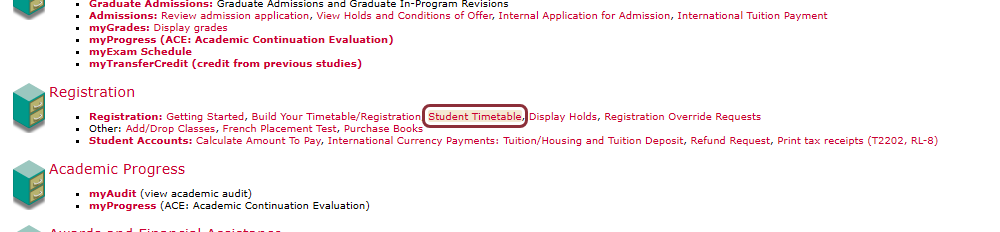
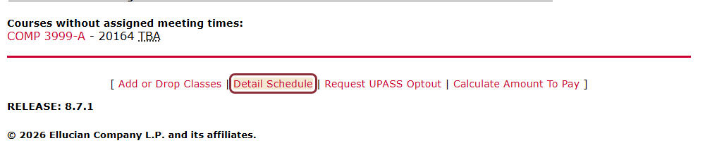

Finding your schedule
The short version: log in to Carleton Central, click the extension, pick your term, and hit Review & export. It handles the rest. The longer walkthrough below is for when something does not line up.
-
Log in to Carleton Central
Go to central.carleton.ca and sign in as usual. The extension cannot log in for you, and it never sees your password.
-
Click the extension
Anywhere in Carleton Central. It works out where you are and offers a term dropdown, so you never have to find Detail Schedule yourself. If you would rather navigate manually, that route is below.
-
Pick your term and export
Choose a term in the popup and hit Review & export. It loads that term, reads your classes, and opens the review page, where you can untick anything you do not want before downloading.
Always choose the term in the popup rather than on the page. Clicking the page closes the popup, since Chrome dismisses one as soon as you click away.

Finding it manually
If you would rather not use the shortcut, it is two clicks from the main menu. Under Registration, click Student Timetable.

That opens a week grid. The link you want is in the row at the bottom of that page.

If something goes wrong
- "Not a schedule page"
- You are in Carleton Central but not on Detail Schedule. The week-grid timetable is a different page. Pick a term in the extension and it will go there for you.
- "Session timed out"
- Carleton Central logs out after a few minutes idle. Log back in and open the schedule again.
- "No classes found"
- The page loaded with no courses on it. Usually the wrong term is selected, rather than an empty schedule.
- The term picker stopped appearing
- Carleton Central remembers the term you picked and keeps serving it, so Detail Schedule stops asking. Use the term dropdown in the extension to jump straight to another one, instead of logging out and back in.
After you export
You get an .ics file, which every major calendar app can
import. In Outlook: File → Open & Export →
Import/Export → Import an iCalendar (.ics). Google Calendar and
Apple Calendar both accept the same file.
Worth importing into a secondary calendar first, so removing it is one click if you change your mind.